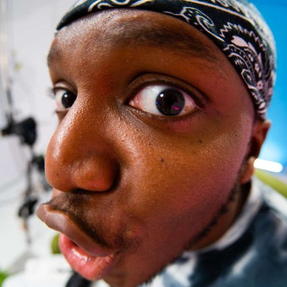
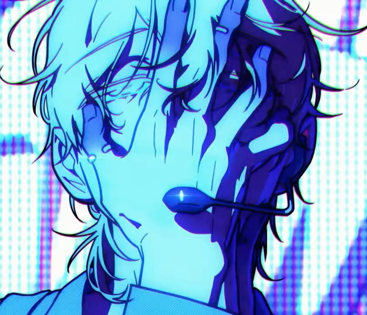
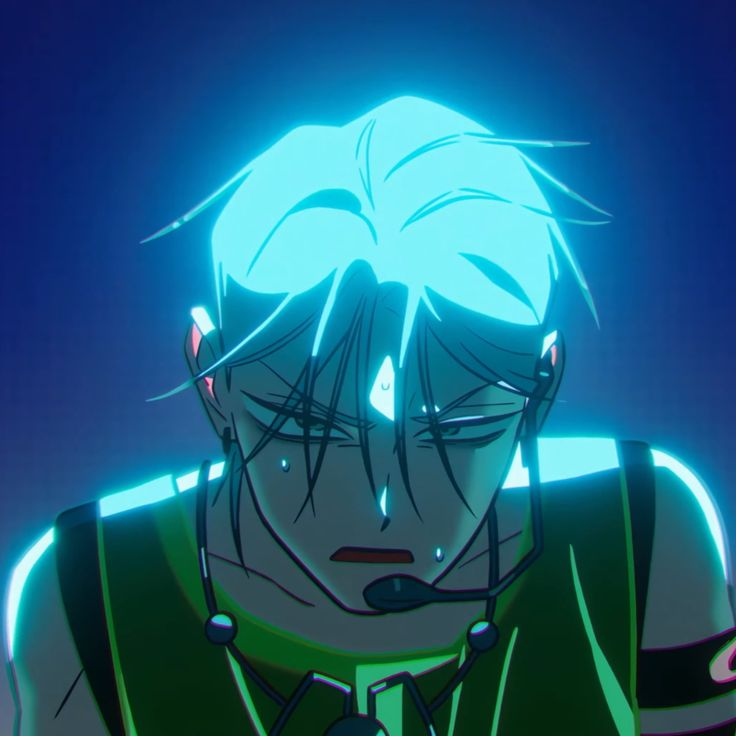
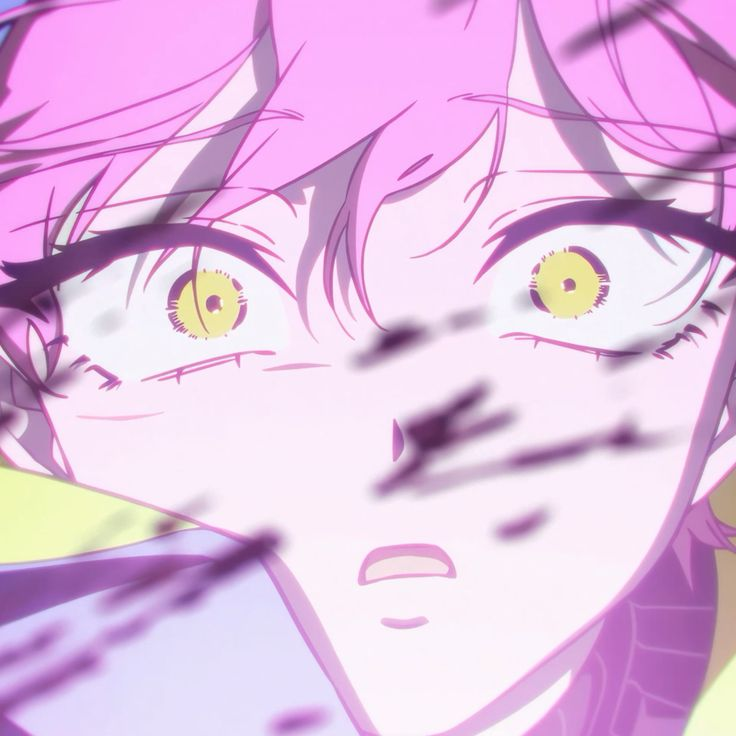

this is where you show your favorite songs to other people and discuss topics about it!
1KSI_glazer posted!

HI GUYS WHAT ARE YOUR FAV SONG? FEEL FREE TO EXPLAIN WHY :D
mines "The thick of it" by KSI because it made me feel like I was strong.. like I was the alpha.
ILoveLuka commented!

Bird cage blue and yellow by Yaelokre
The line "I can be different, I can't be puppetted" strikes me every time i hear it as someone
who's been controlled and silenced my entire life. It gives me hope that I'll unleash myself
from these strings and finally live my life free from the place that once held me down
You commented!
Swerve City by deftones!! In the part 1:44 the combination of the electric guitar and the bass
is just wild, it Hits different especially when the lead joins in. THIS song is underrated!!
Ly commented!

Duwag by Zild,
As someone that has a lot of regrets in my life, this songs just gets it idk😓😓
it also helped me improve myself and avoid being in a situation where i say
"Ano kaya ang magaganap kung hindi ako nagpakaduwag?" again
Yi Xi commented!

Mostly , "past lives" by sapientdream . If one believes in the existence of a past life and specially feels connection
with their soulmate , it's really surreal. The beat specially as the song progresses it takes you back to the forgotten
past , unfolding the records of time . In a place which had been so familiar to you once yet now it gives a mixed feeling
between what's known and the unknown. Yet you'd feel much more at home there , than you do in this timeline.
And just appreciate the unchangeable and neverending affection you feel for your significant other once more.
As if you've fallen for them all over again, and will continue to do so, in each lifetime .
Kaorice commented!
Leakin by Sun Kenji, No words, Just pure masterpiece fr